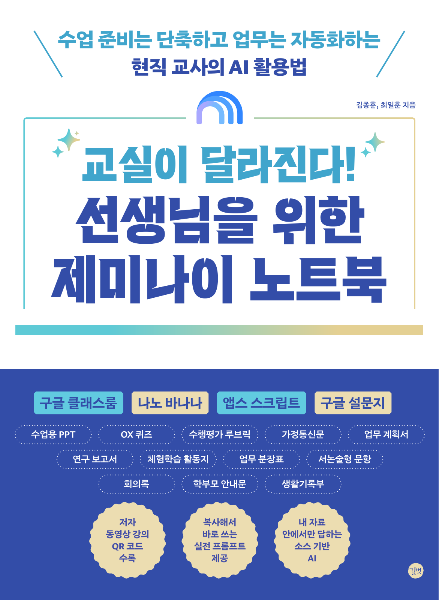

책에서 만난 아이디어를, 교실에서 바로.
준비하는 시간은 짧게.
아이들과의 시간은 깊게.
『선생님을 위한 제미나이 노트북』 속 실전 프롬프트.
내일 수업부터 오늘의 업무까지, 필요한 문장을 꺼내 쓰세요.
140실전 프롬프트
16챕터별 가이드
5가지 활용 영역
김종훈 · 최일훈 지음
교실이 달라진다! 시리즈
THE TEACHER’S NEW COMPANION
교실이 달라진다!
선생님을 위한 제미나이 노트북

✦
내 자료에서 찾는 답수업에 꼭 맞는 AI 활용
복사 한 번, 수업 준비 끝.
선생님을 위한 제미나이 노트북
YOUR PROMPT COLLECTION
책과 함께 쓰는 프롬프트 라이브러리오늘은 어떤 도움이 필요한가요?
/
찾으시는 프롬프트가 없어요.
다른 검색어를 입력하거나 필터를 초기화해보세요.
FROM BOOK TO CLASSROOM세 번의 작은 단계.
세 번의 작은 단계.
달라지는 내일의 교실.
- 01
필요한 프롬프트 찾기
책의 챕터나 키워드로
지금 필요한 예시를 찾아보세요. - 02
복사하고, 나에게 맞추기
학년·교과·단원을 바꾸고
책에서 안내하는 소스를 준비하세요. - 03
검토하고, 수업에 활용하기
결과의 근거와 표현을 확인하고
우리 반에 맞게 다듬어주세요.